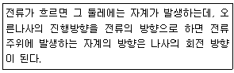
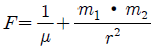
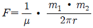
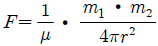
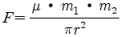
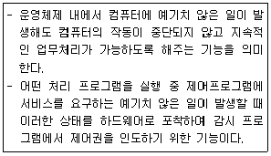
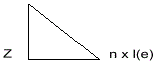

자기비파괴검사산업기사(구) (2011-08-21 기출문제)
1과목: 자기탐상시험원리
1. 고리 모양의 자석 일부가 깨져서 균열이 생겼을 때 이 균열의 주위에 생성되는 자력선을 무엇이라 하는가?
- 자화
- 누설자속
- 자장강도
- 선형자장
(정답률: 알수없음)

2. 자분탐상시험에서 탈자를 하지 않아도 되는 경우는?
- 시험체가 강철로서 높은 보자성을 갖고 있는 경우
- 잔류자기 영향을 받는 소형 주강품과 단조품의 시험체 일 경우
- 큐리점 이상으로 열처리한 시험체일 경우
- 잔류 자속밀도가 남아 있는 시험체일 경우
(정답률: 알수없음)
3. 단면적 4m2, 자속밀도 8Tesla 인 Prod 극에서 발생되는 자속의 세기는?
- 0.5Wb
- 2Wb
- 12Wb
- 32Wb
(정답률: 알수없음)
4. 속이 빈 원통형 시험체의 내부표면과 외부표면을 동시에 검사하기 위하여 선택할 수 있는 자화방법으로 가장 적합한 것은?
- 축통전법
- 직각통전법
- 전류관통법
- 프로드법
(정답률: 알수없음)
5. 다음에서 설명하는 법칙은?

- 렌츠의 법칙(Lenz's law)
- 플레밍의 법칙(Fleming's law)
- 쿨롱의 법칙(Coulomb's law)
- 앙페르의 법칙(Ampere's law)
(정답률: 알수없음)
6. 자분탐상시험에서 중심도체(전류관통법)를 사용하여 강자성체의 중공 실린더형 부품을 자화할 때, 자계의 강도가 최대로 나타나는 곳은?
- 도체표면
- 실린더 내부표면
- 실린더 외부표면
- 도체표면과 실린더 내부표면사이
(정답률: 알수없음)
7. 누설시험을 국부적 부위에 적용할 때 탐상 감도가 가장 높은 검사법은?
- 진공 시험
- 기포 누설시험
- 질량분석 누설시험
- 압력변환 누설시험
(정답률: 알수없음)
8. 용접부의 초음파탐상에 대한 설명으로 옳은 것은?
- 루트 용입부족의 검출에는 탠덤법이 효과적이다.
- 블로홀의 검출에는 탠덤법과 V 투과법이 효과적이다.
- X-개선용접부의 내부 용입부족 검출에는 V 투과법이 효과적이다.
- X-개선용접부의 내부 용입부족 검출에는 탠덤법이 효과적이다.
(정답률: 알수없음)
9. 강구조물의 파괴에 대한 설명 중 옳은 것은?
- 지연균열은 반복하중 하에서 어떤 반복회수 후에 생긴다.
- 용접부에 생기는 응력집중은 구조물의 강도를 저하시킨다.
- 응력부식균열은 용접 후 어떤 시간의 경과 후 일어나는 수소에 의한 균열이다.
- 용접결함이 존재하면 그곳에 높은 온도영역이 발생하고 연성파괴 사고의 원인이 되는 것이 있다.
(정답률: 알수없음)
10. 전하(q)가 있을 때 이 전하로부터 거리가 r 만큼 떨어진 곳에 같은 크기의 전하에 작용하는 힘(F, 자장의 세기)을 나타낸 관계식은?(단, k 는 비례상수이다.)
- F = k(q/r)2
- F = kㆍq(1/r)2
- F = k(r/q)2
- F = kㆍr(q/r)2
(정답률: 알수없음)
11. 굴삭기의 몸체가 용접 구조물로 이루어져 있을 때 몸체에 칠해진 페인트도막 두께를 측정하고자 한다. 다음 중 가장 적합한 비파괴검사법은?
- 침투탐상시험
- 자분탐상시험
- 방사선투과시험
- 와전류탐상시험
(정답률: 알수없음)
12. 다음 설명 중 침투탐상시험의 특성이 아닌 것은?
- 미세한 표면불연속의 검출이 가능하다.
- 대형부품의 현장검사가 가능하다.
- 균열이나 불연속의 깊이를 정확하게 측정할 수 있다.
- 제조사가 다른 침투제를 사용할 경우 검출감도가 가감될 수 있다.
(정답률: 알수없음)
13. 다음 중 물질을 투과하는 성질을 갖으며, 방사선투과시험에 사용되는 방사선이 아닌 것은?
- X선
- γ선
- β선
- 중성자선
(정답률: 알수없음)
14. 쿨롱의 법칙에서 두 자극사이에 작용하는 힘(F)을 구하는 식으로 옳은 것은?(단, 자극의 세기는 각각 m1, m2, 투자율은 μ, 자극간의 간격은 r 이다.)




(정답률: 알수없음)
15. 비파괴검사 방법 중 광학, 색채학의 원리를 이용한 검사방법은?
- 누설검사
- 방사선투과검사
- 음향방출검사
- 침투탐상검사
(정답률: 알수없음)
16. 재료의 스트레인(Strain)측정을 위한 비파괴검사법은?
- AE시험
- 중성자투과검사
- 전자유도시험
- X선 응력측정법
(정답률: 알수없음)
17. 자분탐상검사법에 비하여 자기 센서를 이용한 누설자속탐상법의 장점이라고 볼 수 없는 것은?
- 전기 신호에 의한 자동화가 가능하다.
- 결함의 정량 측정이 가능하다.
- 결함 검출 한계가 적다.
- 객관성 시험이 가능하다.
(정답률: 알수없음)
18. 비파괴검사방법 중 탈자가 필요한 검사 방법은?
- 초음파탐상검사
- 자분탐상검사
- 침투탐상검사
- 방사선투과검사
(정답률: 알수없음)
19. 다음의 비파괴검사법 중 인체의 유해성이 가장 큰 시험법은?
- 자분탐상시험
- 초음파탐상시험
- 방사선투과시험
- 와전류탐상시험
(정답률: 알수없음)
20. 초음파탐상시험의 장점이 아닌 것은?
- 검사자 주변 또는 주변 사람에 대한 장애가 없다.
- 내부결함의 위치, 크기, 방향을 어느 정도 측정할 수 있다.
- 페라이트 함량이 적은 오스테나이트 용접조직 검출능력이 우수하다.
- 고감도이므로 미세한 결함의 검출과 두꺼운 검사체에 적용이 가능하다.
(정답률: 알수없음)
2과목: 자기탐상검사
21. 시험체 두께가 25mm 이고 프로드 전극의 간격을 12.7cm로 하여 검사할 때 필요한 자화전류(A)로 옳은 것은?
- 150
- 200
- 400
- 600
(정답률: 알수없음)
22. 잔류자화법의 특징으로 옳은 것은?
- 보자력이 높은 부품에 적용할 수 없다.
- 내부결함이 정밀검사에 좋다.
- 소형의 시험체가 다량 있을 때 적합하다.
- 표면의 요철부, 나사부분 등에 적용이 불가능하다.
(정답률: 알수없음)
23. 프로드(Prod)법에 대한 특징이 아닌 것은?
- 원형자화를 발생시킨다.
- 이동성이 좋다.
- 자화전류는 프로드의 간격에 따라서 결정된다.
- 시험면에 아아크 발생으로 인한 손상이 없다.
(정답률: 알수없음)
24. 직경 2cm, 길이 40cm 인 강봉을 전체적으로 검사하기 위한 가장 효율적인 자분탐상 검사방법의 조합은?
- 프로드법과 극간법
- 코일법과 축통전법
- 코일법과 전류관통법
- 극간법과 유도전류법
(정답률: 알수없음)
25. 강괴에 들어있는 기공이나 개재물 같은 결함들이 압연과정에서 외부면과 평행하게 되어 층모양으로 판재에 존재하는 결함은?
- 비금속 개재물
- 편석
- 라미네이션
- 파이프
(정답률: 알수없음)
26. 판정대상 지시모양을 나타내는 결함 중 2차가공처리 과정에서 발생되는 결함은?
- 피로균열
- 연마균열
- 용접균열
- 응력부식균열
(정답률: 알수없음)
27. 자화력이 미치는 자석의 내부 및 주변 또는 전류가 흐르는 전도체의 내부 및 주변의 자력범위를 무엇이라고 하는가?
- 자계
- 자속
- 자성
- 자극
(정답률: 알수없음)
28. 직경 40mm, 길이 200mm 인 봉을 코일법으로 검사할 때 장비 최대전류가 1000A 라면 검사체에는 몇 회의 코일을 감아야 하는가?
- 2회
- 5회
- 10회
- 15회
(정답률: 알수없음)
29. 시험체 표면이나 일부분에 손상을 줄 수 있는 자화방법으로만 나열된 것은?
- 극간법, 프로드법, 전류관통법
- 축통전법, 직각통전법, 프로드법
- 극간법, 전류관통법, 코일법
- 축통전법, 코일법, 자속관통법
(정답률: 알수없음)
30. 자분탐상검사에 사용되는 검사액의 분산매가 갖추어야 할 성질로 적합하지 않은 것은?
- 점도가 높고 적심성이 없을 것
- 휘발성이 작을 것
- 인화점이 높을 것
- 장기간 변질이 없을 것
(정답률: 알수없음)
31. 탈자 후 시험체에 자극이 없는 경우의 탈자를 확인하는 방법으로 다음 중 적합한 것은?
- 홀 소자를 사용한 자속계로 측정한다.
- 시험체를 강자성체로 마찰하여 자분을 적용하고, 마찰된 부분에 자분의 부착 여부로 확인한다.
- 간이형 자장지시계로 측정한다.
- 자기컴파스로 측정한다.
(정답률: 알수없음)
32. 진공에서의 투자율(μ0)은 얼마인가?
- μ0 = 4π x 10-7 H/m
- μ0 = 4π x 10-6 H/m
- μ0 = 2π x 10-7 H/m
- μ0 = 2π x 10-6 H/m
(정답률: 알수없음)
33. 속이 빈 강관 시험체 구멍을 통과시킨 도체에 전류를 흘려서 자화시키는 방법으로 축방향 결함을 검출하는데 사용하는 것은?
- 코일법
- 전류관통법
- 프로드법
- 축통전법
(정답률: 알수없음)
34. 자분탐상 검사방법 중 시험체 표면에 존재하는 미세하고 얕은 결함을 검출하는데 가장 좋은 방법은?
- 습식, 직류, 형광자분
- 습식, 교류, 형광자분
- 건식, 직류, 비형광자분
- 건식, 교류, 비형광자분
(정답률: 알수없음)
35. 시험체의 국부에 각각 2개의 전극을 접촉하고 전류를 보내는 자화법은?
- 코일법
- 극간법
- 프로드법
- 자속관통법
(정답률: 알수없음)
36. 자분탐상시험의 특징이 아닌 것은?
- 표면 균열검사에 적합하다.
- 강자성체 재료에 한한다.
- 시험체가 큰 경우에는 높은 자화전류치가 요구되기도 한다.
- 선 모양 결함 검출은 어렵지만 핀 홀과 같은 점 모양 검출이 용이하다.
(정답률: 알수없음)
37. 다음 중 자계를 측정하는 자기계측기로써 측정감도가 가장 높은 것은?
- 가우스 미터
- 에르스테드 미터
- 간이형 자기검출기
- 자기 컴퍼스
(정답률: 알수없음)
38. 자분탐상검사에 사용되는 자분의 자기적 성질 및 구비조건에 관한 설명 중 틀린 것은?
- 자분의 투자율이 높아야 한다.
- 자분의 보자력이 높아야 한다.
- 분산성이 우수해야 한다.
- 현탁성이 우수해야 한다.
(정답률: 알수없음)
39. 자계의 세기를 측정하는데 사용되는 자속밀도의 단위로 틀린 것은?
- 멕스웰[Mx]
- Wb/m2
- 테스라[T]
- 가우스[G]
(정답률: 알수없음)
40. 연속법에서 사용하는 자화전류로 가장 거리가 먼 것은?
- 직류
- 교류
- 맥류
- 충격전류
(정답률: 알수없음)
3과목: 자기탐상관련규격및컴퓨터활용
41. 철강 재료의 자분탐상 시험방법 및 자분모양의 분류(KS D0213)에 따라 형광자분을 사용하는 경우 나타난 자분모양의 관찰은 자외선조사장치를 사용하여 형광자분 모양을 충분히 식별할 수 있는 어두운 장소에서 관찰하여야 하는데, 관찰면에서 가시광의 밝기는 몇 룩스(lux)이하이어야 하는 가?
- 20
- 100
- 500
- 1000
(정답률: 알수없음)
42. 철강 재료의 자분탐상 시험방법 및 자분모양의 분류(KS D0213)에 의한 재질 경계지시로 볼 수 없는 것은?
- 시험체가 서로 접촉했을 때 형성되는 부정모양의 자분모양
- 용접부의 용접금속과 모재의 경계부위에 형성되는 자분모양
- 냉간가공의 표면 가공도가 다른 부분에 생기는 자분모양
- 단조품 또는 압연품의 메탈플로우에 생기는 자분모양
(정답률: 알수없음)
43. 보일러 및 압력용기에 대한 자분탐상검사(ASME Sec.VArt.7)에서 축통전법으로 탐상할 때 자화전류는 직류나 정류 전류가 사용된다. 이 때 필요한 전류는 외경 인치당 얼마의 전류가 필요한가?
- 90 ~ 110A
- 120 ~ 150A
- 200 ~ 280A
- 300 ~ 800A
(정답률: 알수없음)
44. 보일러 및 압력용기에 대한 자분탐상시험(ASME Sec.VArt.7)에서 규정한 링형시험편(Ring Specimen)에서의 표면하 구멍의 개수는?
- 9
- 10
- 11
- 12
(정답률: 알수없음)
45. 철강 재료의 자분탐상 시험방법 및 자분모양의 분류(KS D0213)에서 시험결과 확인된 자분모양이 흠에 의한 것으로 판정하기 어려울 때는 일반적으로 어떻게 하는가?
- 결함이 아닌 것으로 판정한다.
- 현미경으로 관찰하여 확인 판정한다.
- 탈자를 한 후 재시험을 한다.
- 강자성체를 시험면에 접촉시켜 자기흔적 여부를 확인한다.
(정답률: 알수없음)
46. 철강 재료의 자분탐상 시험방법 및 자분모양의 분류(KS D0213)에서 규정한 자분모양의 분류에 해당되지 않는 것은?
- 균열에 의한 자분모양
- 원형상의 자분모양
- 분산한 자분모양
- 내부기공에 의한 자분모양
(정답률: 알수없음)
47. 보일러 및 압력용기에 대한 자분탐상검사(ASME Sec.VArt.7)에서 프로드법으로 직류를 사용할 때, 시험체 두께가 3/4인치 이상일 경우 프로드 간격에 대한 자화전류의 범위는 몇 A/in 인가?
- 90 ~ 110
- 100 ~ 125
- 110 ~ 130
- 120 ~ 140
(정답률: 알수없음)
48. 보일러 및 압력용기에 대한 자분탐상검사(ASME Sec.VArt.7)에서 선형자화법으로 5000 암페어ㆍ턴이 요구되었다면 5회 감긴 코일에 몇 A를 사용하여야 하는가?
- 200
- 500
- 1000
- 5000
(정답률: 알수없음)
49. 철강 재료의 자분탐상 시험방법 및 자분모양의 분류(KS D0213)에 따라 가장 높은 유효자계의 강도에서 자분모양이 나타날 수 있는 시험편은?
- A1-7/50(직선형)
- A2-7/50(직선형)
- A1-15/50(직선형)
- A2-15/50(직선형)
(정답률: 알수없음)
50. 철강 재료의 자분탐상 시험방법 및 자분모양의 분류(KS D0213)에 따라 시험체를 자화시킬 때 고려할 사항이 아닌 것은?
- 자계의 방향을 예측되는 흠의 방향에 대하여 가능한 한 직각으로 한다.
- 자게의 방향을 시험면에 가능한 한 평행으로 한다.
- 반자계는 가능한 한 크게 한다.
- 자화 방법은 몇 가지를 조합하여 사용할 수 있다.
(정답률: 알수없음)
51. 철강 재료의 자분탐상 시험방법 및 자분모양의 분류(KS D0213)에 따라 A형 표준시험편을 사용하여 A1-15/100 로 자분모양을 얻었다면 (A1-15/100)x2는 어떻게 하여야 하는가?
- 초기에 사용한 시험편과 동일한 시험편을 2개 사용하여 검사한다.
- 초기에 사용한 전류치 보다 2배의 전류치를 사용하여 검사한다.
- 초기에 사용한 극간격 보다 2배의 극간격으로 재검사한다.
- 초기에 사용한 부위에서 다른 각도로 2회 검사한다.
(정답률: 알수없음)
52. 철강 재료의 자분탐상 시험방법 및 자분모양의 분류(KS D0213)에서 규정된 A형 표준시험편의 사용방법으로 옳은 것은?
- 표준시험편과 검사면의 접촉상태는 매우 중요하며, 약 1mm 이상의 간격이 필요하다.
- 표준시험편의 인공흠이 있는 면을 시험면에 접촉시켜야 한다.
- 점착성 테이프로 접촉시킬 경우는 테이프가 인공 흠부위를 완전히 덮도록 해야 한다.
- 일반적으로 잔류법에 사용한다.
(정답률: 알수없음)
53. 보일러 및 압력용기에 대한 자분탐상시험(ASME Sec.V Art.7)에 따라 전류관통법으로 실린더형 제품의 구멍에 하나의 케이블을 관통하여 6000A 전류에서 적정한 자화강도를 얻었다면 3개의 관통 케이블을 사용하면 몇 A의 자화전류가 필요하겠는가?
- 2000
- 6000
- 9000
- 18000
(정답률: 알수없음)
54. 보일러 및 압력용기에 대한 자분탐상검사(ASME Sec.V Art.7)에 따르면 프로드(Prod)법에서 요구되는 최소의 Prod 간격은?
- 8 inch
- 6 inch
- 3 inch
- 1 inch
(정답률: 알수없음)
55. 철강 재료의 자분탐상 시험방법 및 자분모양의 분류(KS D0213)에 의해 시험할 경우 용접부 열처리 후에 하는 시험의 원칙적인 자화방법에 대한 설명으로 옳은 것은?
- 극간법으로 한다.
- 프로드법으로 한다.
- 극간법과 프로드법 어느 것이나 무방하다.
- 극간법과 프로드법 모두 사용할 수 없다.
(정답률: 알수없음)
56. 다음이 설명하고 있는 것은?

- Execute Cycle
- Indirect Cycle
- Interrupt
- Fetch
(정답률: 알수없음)
57. 컴퓨터통신 사용에 대한 예절로 가장 부적절한 것은?
- 전문적인 지식은 공유한다.
- 모든 데이터는 여러 사람과 공유한다.
- 다른 사람의 사생활을 존중한다.
- 잘못된 정보는 공유하지 않는다.
(정답률: 알수없음)
58. 다음 중 바이러스를 예방 또는 치료해주는 프로그램은?
- 메모리 관리 프로그램
- 파일 관리 프로그램
- 백신 프로그램
- 문서편집 프로그램
(정답률: 알수없음)
59. PC 운영체제에 대한 설명으로 틀린 것은?
- 하드웨어와 응용 프로그램간의 인터페이스역할을 한다.
- CPU, 주기억장치, 입출력장치 등의 컴퓨터 자원을 관리한다.
- 컴퓨터 시스템의 전반적인 동작을 제어하는 시스템프로그램의 집합이다.
- 사용자가 작성한 원시프로그램을 기계어로 된 목적프로그램으로 변환한다.
(정답률: 알수없음)
60. 다음 인터넷 서비스에 대한 설명으로 잘못된 것은?
- Telnet : 원격 접속 서비스
- Archie : 파일 검색 서비스
- Gopher : 메뉴 형식의 정보제공 서비스
- Irc : TV시청과 인터넷 정보검색을 동시에 가능하게 하는 서비스
(정답률: 알수없음)
4과목: 금속재료 및 용접일반
61. Fe-C 상태도에 관한 설명으로 옳은 것은?
- δ-Ferrite는 면심입방격자 금속이다.
- A0는 순철의 자기 변태점이며, 온도는 약 723℃이다.
- A1는 시멘타이트의 자기 변태점이며, 온도는 약 768℃이다.
- 순철의 A3변태점의 온도는 약 910℃이며, α⇆γ가 되는 점이다.
(정답률: 알수없음)
62. 완전 탈산한 강으로 강괴 중앙 상부에 큰 수축관이 발생하여 불순물이 그 부분에 모이는 강괴는?
- 킬드강
- 캡드강
- 림드강
- 세미킬드강
(정답률: 알수없음)
63. 스테인리스강에 대한 설명으로 옳은 것은?
- 마텐자이트계 스테인리스강은 18%Cr-8%Ni이 대표적이다.
- 페라이트계 스테인리스강은 일반적으로 풀림상태에서 내식성이 가장 나쁘다.
- 오스테나이트계 스테인리스강의 예민화를 방지하기 위해서 탄소함량을 높이는 것이 좋다.
- 오스테나이트계 스테인리스강의 강화는 열처리보다 냉간가공에 의한 것이 효과적이다.
(정답률: 알수없음)
64. 격자결함 중 점결함에 해당 되는 것은?
- 원자공공
- 전위
- 적층결함
- 주조결함
(정답률: 알수없음)
65. 초경합금의 특성이 아닌 것은?
- 경도가 높다.
- 내마모성 및 압축강도가 높다.
- 고온경도 및 강도가 양호하여 고온에서 변형이 적다.
- 사용목적과 용도에 따라 재질의 종류와 형상이 단순하며, 초경합금으로 SnC가 많이 사용된다.
(정답률: 알수없음)
66. 체심입방격자에 관한 특징을 설명한 것 중 틀린 것은?
- 배위수는 8이다.
- 원자충진율은 약 68%이다.
- Cr, Mo, V 등이 이에 해당되는 금속이다.
- 단위격자에 속한 원자수는 총 4개이다.
(정답률: 알수없음)
67. 황동의 내식성을 개선하기 위하여 7:3황동에 주석을 1%정도 첨가한 합금은?
- 톰백
- 니켈 황동
- 네이벌 황동
- 에드미럴티 황동
(정답률: 알수없음)
68. 다음 중 수소저장용 합금의 기능이 아닌 것은?
- 금속의 미분말화 작용
- 수소의 분리 및 정제
- 초탄성 효과의 작용
- 저온, 저압에서의 수소저장
(정답률: 알수없음)
69. Mg 합금의 특징 중 틀린 것은?
- 비강도가 크다.
- 고온에서 활성이다.
- 상온가공이 가능하다.
- 주조용으로 엘렉트론(Elektron)합금이 있다.
(정답률: 알수없음)
70. Cu, Sn, 흑연 분말을 적정혼합하여 소결에 의해 제조한 분말 야금용 합금으로 급유가 곤란한 부분에 사용하는 베어링은?
- 켈멧
- 자마크
- 오일리스베어링
- 베비트 메탈
(정답률: 알수없음)
71. 다음 결함 중 구조물에 가장 나쁜 영향을 끼치는 결함은?
- 언더 컷(Under Cut)
- 은점(Fish Eye)
- 피트(Pit)
- 균열(Crack)
(정답률: 알수없음)
72. 용접금속 내부에 발생되기 쉽고, 주로 수소가스에 의해 결함이 생기는 것은?
- 기공
- 용입불량
- 오버 랩
- 언더 컷
(정답률: 알수없음)
73. 용접부의 풀림 처리에 대한 설명으로 올바른 것은?
- 충격저항이 감소된다.
- 경화부가 더욱 경화된다.
- 잔류응력이 감소된다.
- 취성이 생긴다.
(정답률: 알수없음)
74. 가스용접 시 팁 끝이 순간적으로 막히면 가스의 분출이 나빠지고 토치의 가스 혼합실까지 불꽃이 그대로 도달되어 토치의 가스 혼합실까지 불꽃이 그대로 도달되어 토치가 빨갛게 달구어지는 현상을 무엇이라고 하는가?
- 역류
- 역화
- 인화
- 점화
(정답률: 알수없음)
75. 알루미늄, 스테인리스강, 구리 및 구리합금 등의 용접에 가장 적합한 용접법은?
- 불활성 가스 금속 아크 용접법
- 서브머지드 아크 용접법
- 탄산가스 아크 용접법
- 테르밋 용접법
(정답률: 알수없음)
76. 전자 빔 용접에 대한 특징을 설명한 것 중 틀린 것은?
- 에너지를 집중시킬 수 있으므로 고용융 재료의 용접이 가능하다.
- 빔 열원을 이용하므로 용입이 깊은 용접부를 얻는다.
- 용접변형이 적고, 고속 용접이 가능하다.
- 대기와 반응되기 쉬운 활성금속에는 불리하다.
(정답률: 알수없음)
77. 불활성 가스 금속 아크 용접용 전원으로 가장 적당한 것은?
- 직류 역극성
- 직류 정극성
- 교류 정극성
- 교류 역극성
(정답률: 알수없음)
78. 탄산가스 아크 용접법의 분류에서 용극식 중 플럭스 와이어 CO2법에 속하지 않은 것은?
- 아코스 아크법
- 텅스텐 아크법
- 퓨즈 아크법
- 유니언 아크법
(정답률: 알수없음)
79. 연강 판의 가스용접 시 모재 두께가 3.2mm일 때 용접봉의 지름을 계산식에 의해 구하면 몇 mm인가?
- 1.0mm
- 1.6mm
- 2.6mm
- 4.0mm
(정답률: 알수없음)
80. 보기와 같이 도시된 필릿 용접기호의 표시 중 틀린 것은?

- Z - 목단면적
- n - 용접부 수
- l - 용접 길이(크레이터제외)
- (e) - 인접한 용접부 간격
(정답률: 알수없음)